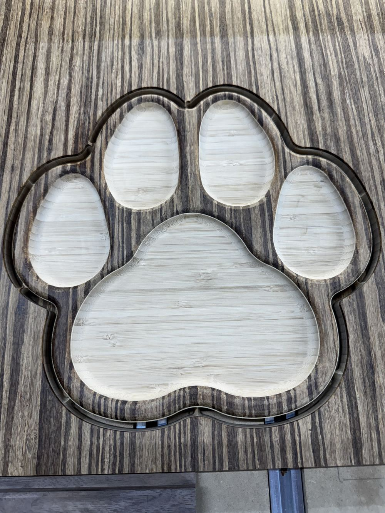
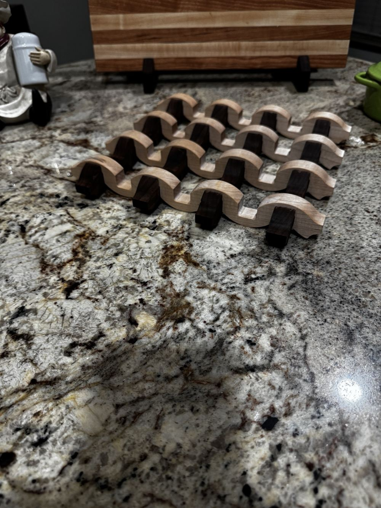

First run · five orders
PawPrint Serving Tray
Five carved pockets in striped BamX. $65 introductory price, or $75 personalized with your pet’s name.
See the PawPrint tray
Crafted by hand
From handcrafted architectural beams and mantels to the WoodenYou Legacy Series™ outdoor collection, every piece is designed for decades of service and built right here in Newcastle, Oklahoma.

Distressed, hand-finished beams built to become the centerpiece of any room.
All-weather outdoor pieces designed for decades of service, not a few seasons.
From one-of-a-kind commissions to heirloom statement pieces, every project starts with a conversation.
Two small-batch pieces, photographed on the bench in Newcastle. See more details and ordering options in the gallery.

Five carved pockets in striped BamX. $65 introductory price, or $75 personalized with your pet’s name.
See the PawPrint tray
Solid maple and walnut in a true over-under weave. $69 each or two for $125.
See the Woven TrivetWe use CNC technology where it makes sense… and traditional woodworking where it matters most. Every piece is shaped, refined, and finished the right way — by hand.
Every piece starts in the shop, where precision tools handle the repeatable work and human hands handle the judgment. The result is clean, consistent craftsmanship with the character only hand-finishing can create.
From architectural beams and mantels to Legacy Series™ Outdoor Decor, every project is built with the same standard: precision, durability, and hand-finished character.